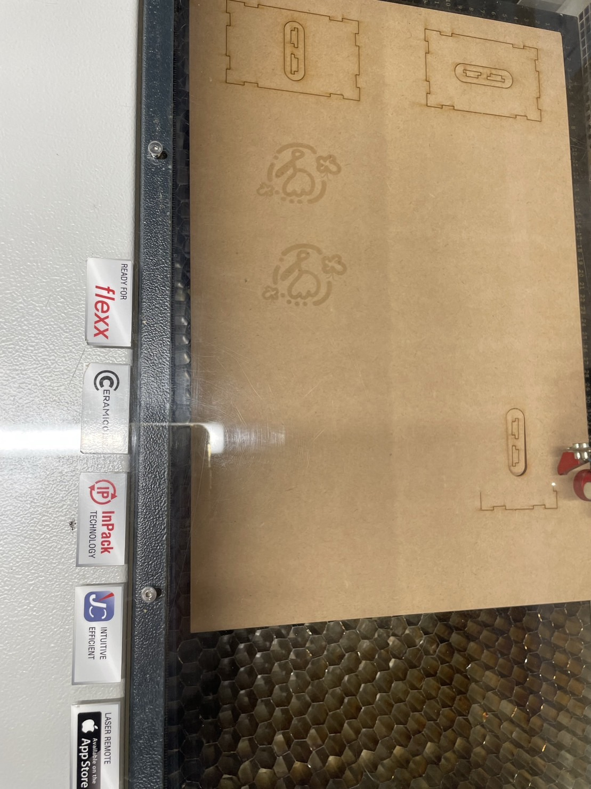
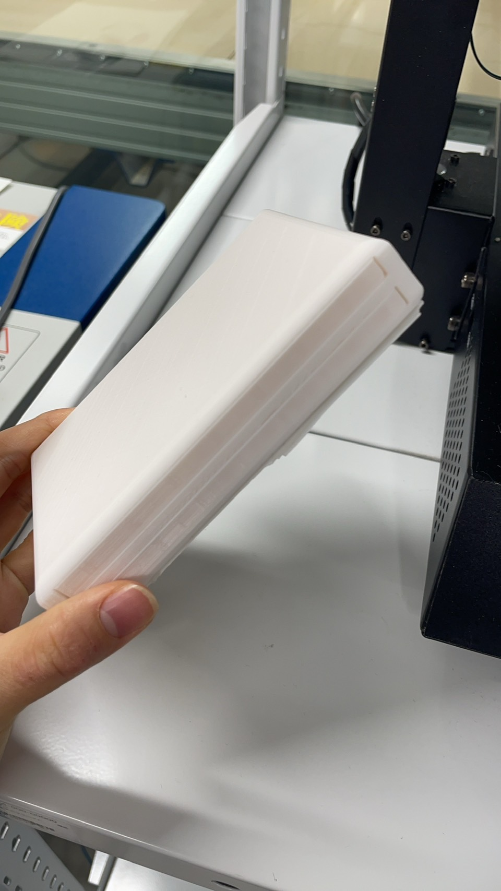

第7回｜鎌倉プロジェクト
＊自分たちが話を聞いた情報の共有＊
今回お話を伺った2人
＜具体的な要望＞
男性：ソテツの葉をホウキとして利用していて、ソテツの葉を束ねられるようなまとめるものがあればいいなと思っている。
女性：ショルダーバックの肩掛けで落ちないようなものと雨が降ったときに屋根が出るような工夫してある洗濯物の屋根があればいいなと思っている。
ソテツの詳しい内容
・できるだけSDGｓが意識したい。
・プラッスチックや鉄の利用を避けたい
→庭で育てたソテツの枯れた葉を利用しているため愛着があるこの感情を活かしたい！！
ショルダーバックの肩掛け
・リュックの止めるようなものを肩掛けバージョンいにできないか、、、
・肩からどうしてもズレ落ちてしまうのをなくしたい。
→実際に自分たちが利用しているショルダーバックから原因とその原理について詳しく調べて解決に繋げたい！！
＊他の人からの情報共有＊
私が興味を持ったもの
・ICケース
→カードを２つ入れてもエラーが起きないようなカードケースが欲しい。
・スケジュール管理
→家族で共有できるような分かりやすいスケジュール管理ボードみたいなもの。
・めがね
→オリジナルカスタムができるような面白いめがね。
プロトタイプ製作
問題：どのような機械が使えるのか。。レーザーカッターか3Dプリンターなのか？
→とりあえずイメージを形にしていくことに！
イメージがわかない時こそ行動を起こすことが重要である。
問題を解決することは、簡単なことではない、、
そんな時こそ足を止めない、やってみるチャレンジすることが大切。
①ICケース

※実際に形にしてみたモノ
左側：レーザーカッター使用 右側：3Dプリンター使用